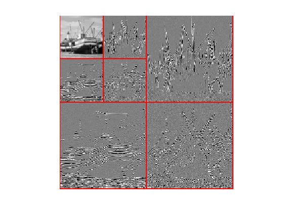
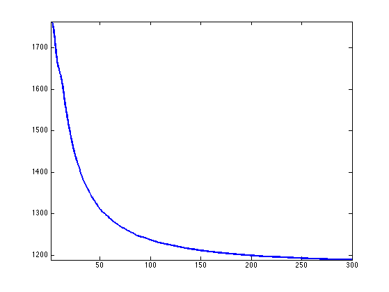
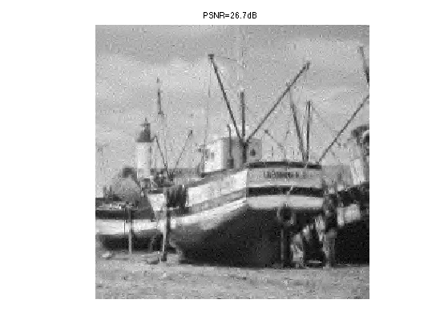
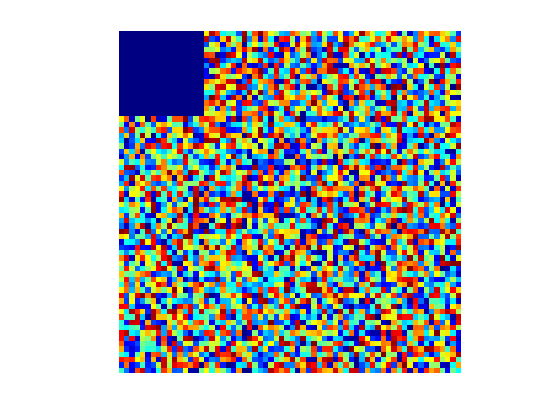
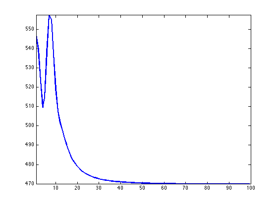

Compressed Sensing of Images
This tour explores compressed sensing of natural images, using different sparsity priors over a wavelet basis.
Contents
Installing toolboxes and setting up the path.
You need to download the following files: signal toolbox and general toolbox.
You need to unzip these toolboxes in your working directory, so that you have toolbox_signal and toolbox_general in your directory.
For Scilab user: you must replace the Matlab comment '%' by its Scilab counterpart '//'.
Recommandation: You should create a text file named for instance numericaltour.sce (in Scilab) or numericaltour.m (in Matlab) to write all the Scilab/Matlab command you want to execute. Then, simply run exec('numericaltour.sce'); (in Scilab) or numericaltour; (in Matlab) to run the commands.
Execute this line only if you are using Matlab.
getd = @(p)path(p,path); % scilab users must *not* execute this
Then you can add the toolboxes to the path.
getd('toolbox_signal/'); getd('toolbox_general/');
Low Pass Linear Measures
We first make use of \(P\) low pass linear measurements to remove the low frequency content of the image.
Natural images are not only sparse over a wavelet domain. They also exhibit a fast decay of the coefficient through the scale. The coarse (low pass) wavelets caries much of the image energy. It thus make sense to measure directly the low pass coefficients.
We load an image \(f \in \RR^{n^2}\) of \(n \times n\) pixels.
name = 'boat';
n = 256;
f = load_image(name, n);
f = rescale(f);
Shortcuts for the wavelet transform \( \{\dotp{f}{\psi_m}\}_m \). We only compute up to a scale \(J\) so that only \(k_0\) sub-bands are transformed.
k0 = 2; J = log2(n)-k0; Wav = @(f)perform_wavelet_transf(f,J,+1); WavI = @(x)perform_wavelet_transf(x,J,-1);
Compute the wavelet transform.
fw = Wav(f);
Display the coefficients.
clf; plot_wavelet(fw, J);
Exercice 1: (check the solution) Compute an approximation fLow using the \( P=2^{2J}=(n/k_0)^2 \) low pass coefficients.
exo1;
Randomized Orthogonal Measurements
We consider a compressed sensing operator that corresponds to randomized orthogonal projections.
Extract the high pass wavelet coefficients, \(x_0 = \{ \dotp{f}{\psi_m} \}_{m \in I_0}\).
A = ones(n,n); A(1:2^J,1:2^J) = 0; I0 = find(A==1); x0 = fw(I0);
Number of coefficients.
N = length(x0);
Number \( P_0 = 2^{2J}=(n/k_0)^2 \) of low pass measurements.
P0 = (n/2^k0)^2;
Number of CS measurements.
P = 4 * P0;
Generate random permutation operators \(S_1,S_2 : \RR^N \rightarrow \RR^N\) so that \(S_k(x)_i = x_{\sigma_k(i)}\) where \( \sigma_k \in \Sigma_N \) is a random permutation of \(\{1,\ldots,N\}\).
sigma1 = randperm(N)'; sigma2 = randperm(N)'; S1 = @(x)x(sigma1); S2 = @(x)x(sigma2);
The adjoint (and also inverse) operators \(S_1^*,S_2^*\) (denoted S1S,S2S) corresponds to the inverse permutation \(\sigma_k^*\) such that \(\sigma_k^* \circ \sigma_k(i)=i\).
sigma1S = 1:N; sigma1S(sigma1) = 1:N; sigma2S = 1:N; sigma2S(sigma2) = 1:N; S1S = @(x)x(sigma1S); S2S = @(x)x(sigma2S);
We consider a CS operator \( \Phi : \RR^N \rightarrow \RR^P \) that corresponds to a projection on randomized atoms \[ (\Phi x)_i = \dotp{x}{ \phi_{\sigma_2(i)}} \] where \( \phi_i \) is a scrambled orthogonal basis \[ \phi_i(x) = c_i( \sigma_1(x) ) \] where \(\{ c_i \}_i\) is the orthogonal DCT basis.
This can be rewritten in compact operator form as \[ \Phi x = ( S_2 \circ C \circ S_1 (x) ) \downarrow_P \] where \(S_1,S_2\) are the permutation operators, and \(\downarrow_P\) selects the \(P\) first entries of a vector.
downarrow = @(x)x(1:P); Phi = @(x)downarrow(S2(dct(S1(x))));
The adjoint operator is \[ \Phi^* x = S_1^* \circ C^* \circ S_2^* (x\uparrow_P) \] where \(\uparrow_P\) append \(N-P\) zeros at the end of a vector, and \(C^*\) is the inverse DCT transform.
uparrow = @(x)[x; zeros(N-P,1)]; PhiS = @(x)S1S(idct(S2S(uparrow(x))));
Perform the CS (noiseless) measurements.
y = Phi(x0);
Exercice 2: (check the solution) Reconstruct an image using the pseudo inverse coefficients \(\Phi^+ y = \Phi^* y\).
exo2;
Compressed Sensing Recovery using Douglas Rachford Scheme
We consider the minimum \(\ell^1\) recovery from the measurements \(y = \Phi x_0 \in \RR^P\) \[ \umin{\Phi x = y} \normu{x}. \] This can be written as \[ \umin{ x } F(x) + G(x) \qwhereq \choice{ F(x) = i_{\Cc}(x), \\ G(x) = \normu{x}. } \] where \(\Cc = \enscond{x}{\Phi x =y}\).
One can solve this problem using the Douglas-Rachford iterations \[ \tilde x_{k+1} = \pa{1-\frac{\mu}{2}} \tilde x_k + \frac{\mu}{2} \text{rPox}_{\gamma G}( \text{rProx}_{\gamma F}(\tilde x_k) ) \qandq x_{k+1} = \text{Prox}_{\gamma F}(\tilde x_{k+1},) \]
We have use the following definition for the proximal and reversed-proximal mappings: \[ \text{rProx}_{\gamma F}(x) = 2\text{Prox}_{\gamma F}(x)-x \] \[ \text{Prox}_{\gamma F}(x) = \uargmin{y} \frac{1}{2}\norm{x-y}^2 + \ga F(y). \]
One can show that for any value of \(\gamma>0\), any \( 0 < \mu < 2 \), and any \(\tilde x_0\), \(x_k \rightarrow x^\star\) which is a solution of the minimization of \(F+G\).
Exercice 3: (check the solution) Implement the proximal and reversed-proximal mappings of \(F\) (the orthogonal projector on \(\Cc\) and \(G\) (soft thresholding). In Matlab, use inline function with the @ operator.
exo3;
Value for the \(0 < \mu < 2\) and \(\gamma>0\) parameters. You can use other values, this might speed up the convergence.
mu = 1; gamma = 1;
Exercice 4: (check the solution) Implement the DR iterative algorithm. Keep track of the evolution of the \(\ell^1\) norm \(G(x_k)\).
exo4;
Exercice 5: (check the solution) Display the image reconstructed using the \(P_0\) linear and \(P\) CS measurements. The total number of used measurements is thus \(P+P_0\).
exo5;
Compressed Sensing Reconstruction using Block Sparsity
In order to enhance the CS reconstruction, it is possible to use more advanced priors than plain \( \ell^1 \).
One can for instance use a block \( \ell^1 \) norm \[ G(x) = \sum_i \norm{x_{B_i}} \] where \( (B_i)_i \) is a disjoint segmentation of the index set \( \{1,\ldots,N\} \), where \(x_{B} = \{ x_i \}_{i \in B} \in \RR^{|B|}\) extracts the coefficients within \(B\), and \( \norm{x_B} \) is the \(\ell^2\) norm.
The proximal operator of this block \(\ell^1\) norm is a block thresholding \[ \forall \, m \in B_i, \quad \text{Prox}_{\ga G}(x)_i = \max(0, 1-\ga/\norm{x_{B_i}}) x_i. \]
We use uniform blocks of size \(w \times w\).
w = 4;
Blocks position and offset in the image domain.
v = 1:w:n; dv = 0:w-1; [dX,dY,X,Y] = ndgrid(dv,dv,v,v); q = size(X,3); dX = reshape(dX, [w*w q*q]); dY = reshape(dY, [w*w q*q]); X = reshape(X, [w*w q*q]); Y = reshape(Y, [w*w q*q]);
Remove the block which fails outside the image.
I = find( sum(X+dX>n | Y+dY>n) ); X(:,I) = []; Y(:,I) = []; dX(:,I) = []; dY(:,I) = [];
Compute the indexes of the block in \(\{1,\ldots,N\}\), i.e. not in image space but over the CS coefficients space.
U = zeros(n,n); U(I0) = 1:N; Ind = X+dX + (Y+dY-1)*n; I = U(Ind);
Remove the indexes that corresponds to low pass wavelet coefficients.
I(:,sum(I==0)>0) = [];
A block is defined as \(B_i = \{ I_{k,i} \}_{k=1}^{w^2}\). Define the energy.
G = @(x)sum( sqrt(sum(x(I).^2)) );
Just for check : display in coefficient space the block structure.
[A,tmp] = meshgrid( randperm(size(I,2)) , ones(w*w,1));
x = zeros(N,1); x(I) = A;
Z = zeros(n,n); Z(I0) = x;
clf;
imageplot(Z);
colormap jet(256);
 Exercice 6: (check the solution) define the proximal operator \( \text{Prox}_{\ga G} \) of \(G\), and its reversed proximal mapping.
exo6;
Exercice 7: (check the solution) Implement the DR iterative algorithm. Keep track of the evolution of \(G(x_k)\).
exo7;
Exercice 8: (check the solution) Display the image reconstructed using the \(P_0\) linear and \(P\) CS measurements.
exo8;